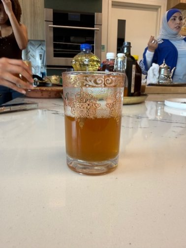
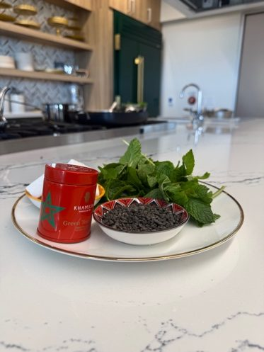
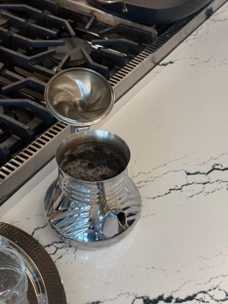
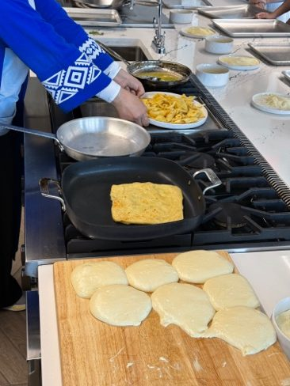
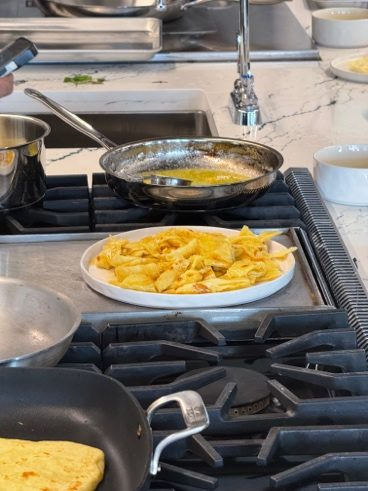
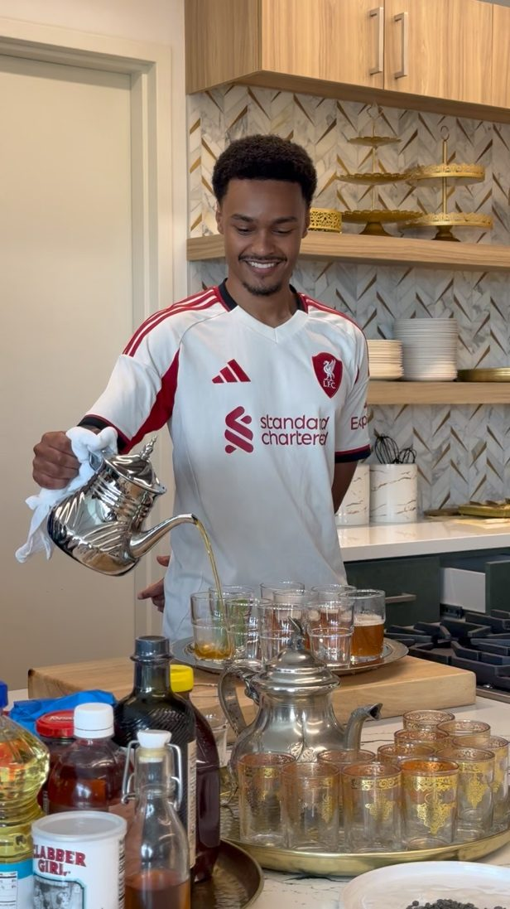
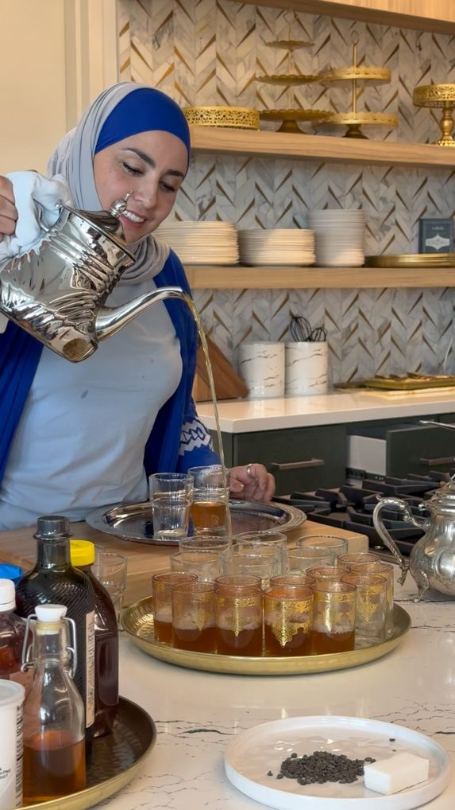
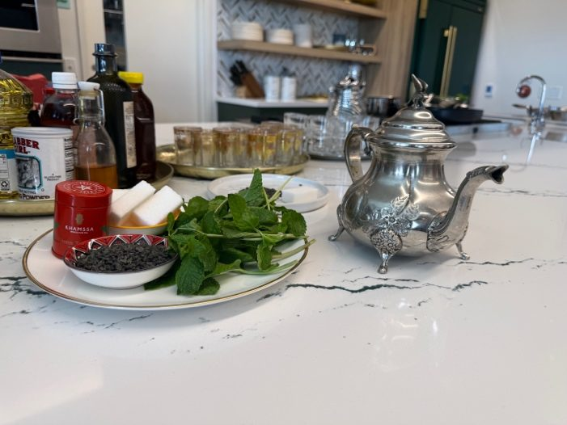

The two dishes we prepared in class are Moroccan staples called Atay and Msemmen. Atay is a traditional Moroccan mint tea prepared in a teapot with tea leaves, mint, and sugar. It is poured from high up in order to create a foam, which is traditionally meant to protect the tea from dust and debris. Msemmen is a square flatbread made from a semolina dough, stretched thin with oil and pan-fried to become flaky and dense and served with honey. These two dishes are integral for representing Moroccan hospitality and values when it comes to communal dining and respect.
While watching Ustadha Raja perform the cooking demonstration, it honestly felt like a home setting, and we were a group of kids waiting for something tasty to eat; except in this case, we were curious not only about the food but also the significance of what it represents, and why it is so important for the Moroccan culture. When we first started learning about the Atay, and how to pronounce all the ingredients in Arabic and how it is served to guests no matter what, I felt a connection with the values of serving a guest, as that is how I was raised as a Hindu. Whenever I visit India, no matter how long it has been, my extended family always tries to give me something to eat or drink, especially tea, so as to express their familiar for me, and this extends to any guests that show up as well. At the end of the day, being in class made me feel like I was back in India with my family. I think the atmosphere really made me feel more comfortable around new people as well, as I am actually rather shy when it comes to directly interacting with people for whom I cannot predict or deduce anything about.



While cooking, I felt like when I was a kid and helping my mom cook a similar dish. It was really quite fun, and it was really satisfying to knead the dough and spread it out into the proper shape. The main task we performed was taking the balls of dough and folding it into the proper shape for Msemmen, so that Ustadha Raja could cook it on the pan while explaining more about it. I found the most difficulty making it maintain its shape, as it would always stretch back, and so my two attempts became what was essentially a folded blob. My solution was to try to stretch out the dough until it tore just a little bit, in order to keep its shape.


The demonstration taught me how Moroccan culinary practices are deep-seated in hospitality. For example, the tea is poured from high up so that a foam is created, blocking any dust or debris from entering the tea, protecting the guest’s drink. We also learned how tea is often served with cookies, and how not serving tea to a guest can be seen as downright scandalous. We also learned how the utensils themselves have significance, from the color of the teacups signifying which person the cup belongs to. Tea is also served from right to left, no matter the status, signifying mutual respect as human beings rather than status-based separation.
Observing the demonstration showed me a parallel between Moroccan and Indian cooking, where nothing is done in measurements, and rather is done by hand. There is no written recipe, only methods handed down verbally. This showed me just how much culture relies on observation. Another parallel was the smell, interestingly enough. When preparing the Msemmen, the smell reminded me of paratha, which is another flaky flatbread from India, albeit made of wheat flour. Rather than new nuances, the culture of cooking felt much like it was in my home country, and my own home.
Going into the demonstration, I didn't have any strong feelings beforehand other than the sense that I was just trying out a new experiment for the day. While watching Ustadha Raja and going through the motions of cooking, my mind was mostly just in observation mode. I was really just focused on taking in the techniques rather than feeling swept up in any particular excitement, and there weren't really any crazy moments or tough challenges to overcome. Afterward, honestly, my main feeling was simply that I was completely full. Even though there were no major surprises, I did actually get to meet some new people. Because we were all sharing the food and the space, it helped me close the gap with classmates I hadn't really interacted with before. As I mentioned earlier, I can be a bit shy around people I can't deduce anything about, so having that comfortable, low-pressure environment made it much easier to naturally connect and talk with everyone.


